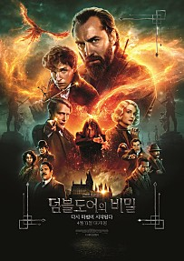

Fantasy
해리 포터와 죽음의 성물 - 1부
⭐⭐⭐⭐⭐⭐⭐⭐(8.2/10)
이제 모든 것을 끝내야 한다. 덤블도어 교장의 죽음 이후,
마법부는 죽음을 먹는 자들에게 점령당하고 호그와트는 위기에
빠진다. 이에 해리와 론, 헤르미온느는 볼드모트를 물리칠 수
있는 유일한 단서이자 그의 영혼이 담긴 ‘성물’ 호크룩스를 찾기
위한 위험한 여정에 나선다.
Fantasy
레디 플레이어 원
⭐⭐⭐⭐⭐⭐⭐⭐(8.7/10)
2045년, 암울한 현실과 달리 가상현실 오아시스(OASIS)에서는
누구든 원하는 캐릭터로 어디든지 갈 수 있고, 뭐든지 할 수
있고 상상하는 모든 게 가능하다. 웨이드 와츠(타이 쉐리던)
역시 유일한 낙은 대부분의 사람들이 하루를 보내는 오아시스에
접속하는 것이다.

Fantasy
신비한 동물들과 덤블도어의 비밀
⭐⭐⭐⭐⭐⭐(6.8/10)
가장 위험한 마법에 맞선, 세상을 구할 전쟁이 시작된다!
1930년대, 제2차 세계대전에 마법사들이 개입하게 되면서 강력한
어둠의 마법사 그린델왈드의 힘이 급속도로 커진다.
덤블도어는 뉴트 스캐맨더에게 위대한 마법사 가문 후손, 마법학교의
유능한 교사, 머글 등으로 이루어진 팀에게 임무를 맡긴다.
 Fantasy
Fantasy
퍼시잭슨과 괴물의 바다
⭐⭐⭐⭐⭐⭐⭐(7.7/10)
신과 인간 세계를 구원할 마법의 황금 양피를 찾아라! 신과 인간
사이에서 특별한 능력을 가지고 태어난 ‘데미갓’들이 모여 훈련
받는 ‘데미갓 캠프’. 어느 날, 사악한 신들의 아버지 크로노스가
봉인을 풀고 부활해 신과 인간 세상을 파멸시키려 한다.
Fantasy
헝거게임 : 더 파이널
⭐⭐⭐⭐⭐⭐⭐(7.8/10)
두 번의 헝거게임에서 살아남은 생존자 캣니스 에버딘. 그런
그녀를 향한 스노우 대통령의 공격은 더욱 거세지고 캣니스의
분노는 폭발한다. 캣니스는 그를 멈추고 모든 것을 끝낼 수
있는 사람이 바로 자신임을 깨닫고, 13구역 군단에 합류한다.
대결을 앞둔 캣니스에게 또 다른 충격적인 사건이 벌어지는데…
Fantasy
알라딘
⭐⭐⭐⭐⭐⭐⭐⭐⭐(9.4/10)
머나먼 사막 속 신비의 아그라바 왕국의 시대. 좀도둑 ‘알라딘’
은 마법사 ‘자파’의 의뢰로 마법 램프를 찾아 나섰다가 주인에게
세 가지 소원을 들어주는 지니를 만나게 되고, 자스민 공주의
마음을 얻으려다 생각도 못했던 모험에 휘말리게 되는데…